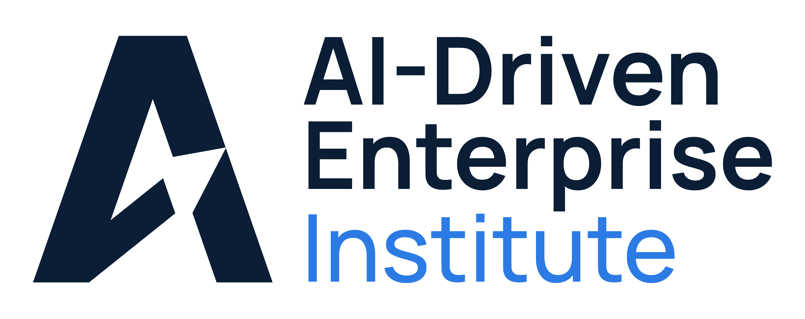
The global standard for tracking corporate AI maturity at the company level across the S&P 500 — measuring AI adoption beyond self-reporting, not aggregate data.
Tracking the AI that counts.
aideinstitute.com
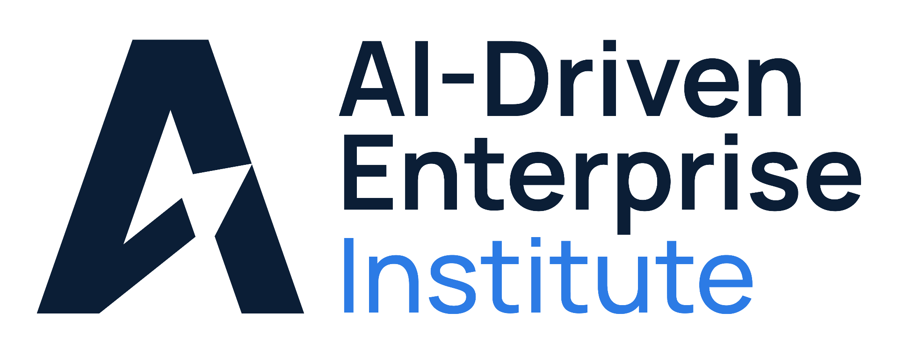
Section 01About the Institute
About the AIDE Institute
The factual basis
for enterprise AI.
for enterprise AI.
The AIDE Institute is an independent research organization that benchmarks AI maturity across the enterprise economy. We track what companies and their leaders actually do with AI — not what they say about it.
3,000+
Companies tracked
500
S&P 500 in cohort
4
Scoring pillars
271.9M
Total data points
Our Mission
Track the AI that counts.
To provide the factual, behavioral basis for understanding how AI is truly transforming the enterprise economy at scale — without bias, and without relying on what companies choose to say about themselves.
Independent · Evidence-based · Longitudinal
Tracking the AI that counts.
Independent research organization
aideinstitute.com
Section 02The Problem
The Problem We Solve
AI progress is being overstated.
Companies have a strong incentive to inflate their AI adoption. There is no objective, standardized way to benchmark how deeply AI is actually embedded in the enterprise economy.
01
Self-reported surveys distort the picture.
Voluntary disclosure produces narrative, not reality. Organizations overstate readiness when investors are watching and understate it when disclosure feels risky.
02
Press releases drive the AI conversation.
PR-driven signals dominate the current landscape. The result is a distorted view of true AI transformation across industries, sectors, and individual companies.
03
Earnings-call rhetoric outpaces reality.
Executives talk about AI faster than their organizations can deploy it. The gap between leadership advocacy and operational implementation is widening across the S&P 500.
~50%
Talk outpaces build by roughly fifty percent across the S&P 500 — advocacy scores nearly double implementation scores in the current cycle.
Tracking the AI that counts.
Source: AIDE Index Q1 2026 · S&P 500 median pillar scores · sample, illustrative
aideinstitute.com
Section 03Our Solution
Our Solution
Evidence-based behavior, not claims.
The AIDE Institute measures AI maturity from observable behavior across public data sources — replacing self-report with a standardized, outside-in framework.
Traditional AI analysis
What everyone else does.
Self-reported adoption claims and surveys
Point-in-time narratives
Anecdotal cross-company comparisons
PR-driven, vendor-curated signals
The AIDE framework
A new standard for AI intelligence.
Behavioral evidence from public data
Longitudinal tracking over time
Systematic benchmarking at scale
Objective, comparable scoring across the cohort
Hundreds of millions of public data points. No proprietary access required. The outside-in methodology reduces bias and produces objective, comparable scores across the entire S&P 500.
Tracking the AI that counts.
AIDE Index methodology v2.1 · S&P 500 cohort
aideinstitute.com/methodology
Section 04Methodology v2.1
Our Methodology
The four pillars of AI maturity.
Two dimensions — Leadership (what executives know & say) and Company (what the org prioritizes & builds) — split into four scoring pillars.
LeadershipWhat executives know & say
CompanyWhat the org prioritizes & builds
AI LITERACY
KNOW
AI ADVOCACY
SAY
AI ORIENTATION
PRIORITIZE
AI IMPLEMENTATION
BUILD
AI Literacy
What executives know.
The share of C-suite and board members demonstrating AI literacy, scored from credentialed backgrounds, public statements, and earnings-call language.
AI Advocacy
What executives say.
Volume and substance of AI-related leadership communication on LinkedIn, in interviews, in keynotes, and at industry events.
AI Orientation
What the org prioritizes.
Strategic AI commitment across six channels — corporate LinkedIn posts, AI job ads, earnings calls, strategy, partnerships, and governance.
AI Implementation
What the org builds.
Tangible AI deployment across six channels — products shipped, customer-facing AI, internal tools, patents, case studies, and website signals.
→ View the full methodology at aideinstitute.com/methodology
Tracking the AI that counts.
Full methodology paper at aideinstitute.com/methodology · v2.1, May 2026
aideinstitute.com
Section 05Our Data
Our Data Sources
Objective measurement at scale.
LeadershipWhat executives know & say
CompanyWhat the org prioritizes & builds
Literacy
KNOW
Board & top management AI experience, skills, and formation.
Articles
Interviews
Keynote Speeches
Panel Discussions
Podcasts
Publications
White Papers
LinkedIn Profiles
Advocacy
SAY
Board & top management public messaging on AI.
Articles
Interviews
Keynote Speeches
Panel Discussions
Podcasts
Publications
White Papers
LinkedIn Posts
Orientation
PRIORITIZE
Strategy, partnerships, acquisitions, workforce, structure.
Analyst Reports
Articles
Earnings Calls
Job Postings
Press Releases
Publications
Videos
LinkedIn Company Posts
Implementation
BUILD
AI products, AI in operations, deployment evidence.
Annual Reports
Articles
Case Studies
Patents USPTO
Press Releases
Publications
Videos
Website Content
Tracking the AI that counts.
Hybrid pipeline: automated OSINT + structured AI Research Agents
aideinstitute.com/methodology
Section 05Evidence Base
Data Coverage · 2026
The evidence base. S&P 500.
Source documents analyzed
518,779
Over half a million source documents analyzed across the AIDE Institute data-collection pipeline for the 2026 cycle of the AIDE Index.
Posts, ads, patents, filings, earnings transcripts, plus external research citations.
Cohort
500
S&P 500 companies
Sectors
11
GICS classifications
Executives
10,563
Unique board members and executives
Words ingested
271.9M
Across all text sources
Tracking the AI that counts.
Source: AIDE Index 2026 · n = 500 companies · methodology v1.1
aideinstitute.com
Section 05Data Coverage · Detail
Channels feeding the AIDE Index
Every score traces back to public evidence.
Social signal
Executive LinkedIn posts BM + TMT
108,224
Company LinkedIn posts
53,737
Words across LinkedIn
14.3M
External research
Executive web evidence Literacy & Advocacy
88,935
Company AI Research Agent Orientation & Implementation
66,681
Multi-source cross-validation
2×
Hiring & talent
Job advertisements LinkedIn Jobs
161,645
AI-role job ads 50 titles · 125-term vocab
8,140
Share of all postings targeting AI
5.0%
Patents & IP
USPTO AI patent families Filed ≥ 2020 · deduplicated
36,944
CPC codes covered
G06N, G06F40, G06F18, G06V
Filings & calls
SEC 10-K filings Latest per company
500
Earnings call transcripts ~4.2 per company
2,113
Words from 10-Ks + earnings
56.0M
Web crawl
Corporate websites Full-site coverage
500
Words crawled from sites
72.1M
AI content scored per site
Richness · Breadth · Depth
518,779
Atomic source documents
271.9M
Total words ingested
155,616
External web links
10,563
Executives classified
Tracking the AI that counts.
Source: AIDE Index S&P 500 · 2026 cycle · methodology v1.1 · data window closed May 2026
aideinstitute.com
2026 · S&P 500 AIDE Index
The Results.
Sector-by-sector breakdown of the AIDE Index across the S&P 500.
Tracking the AI that counts.
aideinstitute.com
Source: AIDE Institute · 2026 AIDE Index S&P 500
AIDE IndexS&P 500 by GICS Sector · 2026-Q2
High-Level Sector View
Information Technology leads. Materials trails by 42 points.
Sector median AIDE Index, cohort-normalized 0–100, decomposed into Leadership (Know + Say) and Company (Prioritize + Build).
Information Technology
64
Communication Services
49
Financials
46
Health Care
43
Industrials
41
Consumer Discretionary
39
Consumer Staples
36
Utilities
29
Energy
26
Real Estate
25
Materials
22
Leadership (Know + Say)
Company (Prioritize + Build)
Tracking the AI that counts.
Source: AIDE Index S&P 500 · 2026-Q2 · cohort-normalized sector medians (Methodology §5.1)
aideinstitute.com
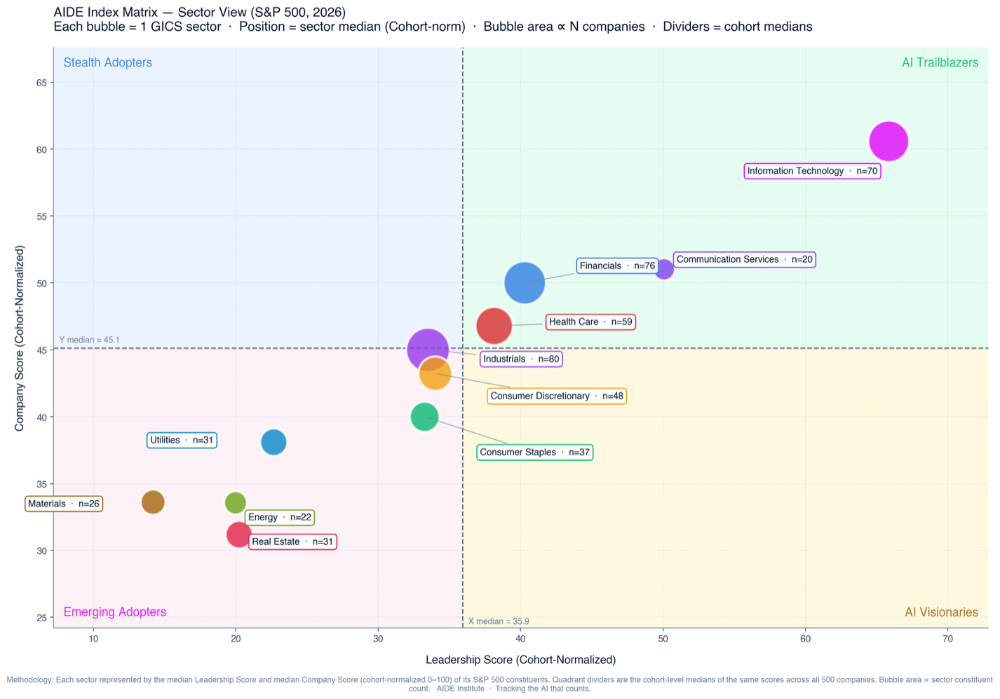
The AIDE Matrix
Sector View
Sector View
Leadership
vs. Company.
vs. Company.
Each GICS sector plotted by its median cohort-normalized Leadership and Company scores. Bubble area ∝ number of S&P 500 constituents; quadrant dividers are the cohort medians.
Tracking the AI that counts.
Source: AIDE Institute · 2026 AIDE Index S&P 500 · methodology v1.1
aideinstitute.com
Sector 01 / 11Information Technology
Information Technology · n = 70
The pacesetter.
Information Technology leads the cohort by a wide margin — the only sector deep in the AI Trailblazers quadrant. 43% of the 70 IT companies are AI Trailblazers; software and semiconductors anchor the top.
64
Sector median AIDE Index
Rank · 11 sectors
01
LiteracyKNOW
60
AdvocacySAY
59
OrientationPRIORITIZE
44
ImplementationBUILD
53
Tech is the only sector with both median Leadership (65.8) and median Company (60.6) above the cohort dividers — the AIDE-frontier of the S&P 500.
Top 4 · within-sector AIDE Index
01
Microsoft
Systems Software
94
02
Salesforce
Application Software
89
03
ServiceNow
Systems Software
85
04
Adobe Inc.
Application Software
83
Archetype distribution · n = 70
10%
Stealth Adopters
43%
AI Trailblazers
40%
Emerging Adopters
7%
AI Visionaries
Tracking the AI that counts.
Source: AIDE Index S&P 500 · 2026-Q2 · sector-normalized within-sector view (Methodology §4.8)
aideinstitute.com
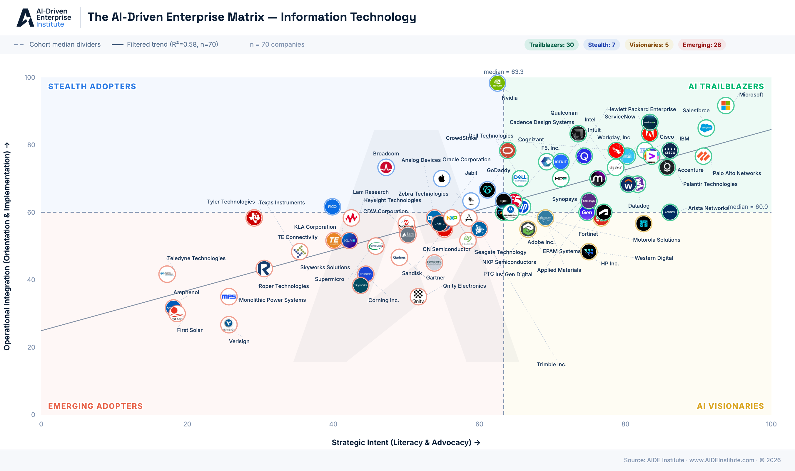
Tracking the AI that counts.
aideinstitute.com
Source: AIDE Institute · 2026 AIDE Index S&P 500 · Information Technology sector view
Sector 02 / 11Communication Services
Communication Services · n = 20
Two giants, then a long tail.
Alphabet and Meta sit at 92–97 on the within-sector index — the rest of the 20-company cohort sits well below. The sector median lands just above the cohort midpoint despite the two outliers.
49
Sector median AIDE Index
Rank · 11 sectors
02
LiteracyKNOW
35
AdvocacySAY
54
OrientationPRIORITIZE
27
ImplementationBUILD
42
Two AI-native platforms hold up an otherwise traditional telco-and-media sector. Median is brittle; remove Alphabet and Meta and the sector collapses.
Top 4 · within-sector AIDE Index
01
Alphabet Inc.
Interactive Media & Services
97
02
Meta Platforms
Interactive Media & Services
92
03
Verizon
Telecom
60
04
Netflix
Movies & Entertainment
60
Archetype distribution · n = 20
10%
Stealth Adopters
40%
AI Trailblazers
40%
Emerging Adopters
10%
AI Visionaries
Tracking the AI that counts.
Source: AIDE Index S&P 500 · 2026-Q2 · sector-normalized within-sector view (Methodology §4.8)
aideinstitute.com
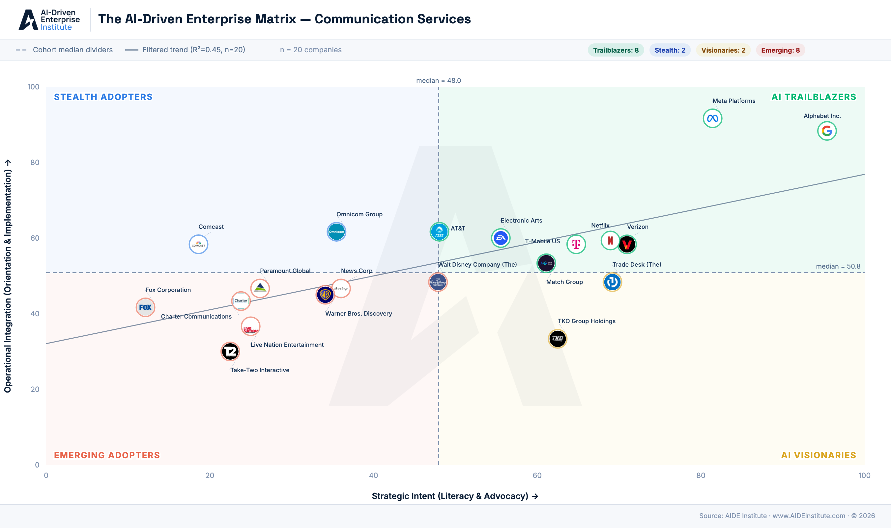
Tracking the AI that counts.
aideinstitute.com
Source: AIDE Institute · 2026 AIDE Index S&P 500 · Communication Services sector view
Sector 03 / 11Financials
Financials · n = 76
Payments lead. Banks follow.
Payment networks (Block, Mastercard, Visa, Nasdaq) take the top four spots within the sector. 53% of the 76 Financials are AI Trailblazers or Stealth Adopters — measurable operational integration.
46
Sector median AIDE Index
Rank · 11 sectors
03
LiteracyKNOW
40
AdvocacySAY
47
OrientationPRIORITIZE
47
ImplementationBUILD
64
Payment networks have moved AI from pilot to production. Median Company score (50.0) clears the cohort divider — Leadership (40.3) does not.
Top 4 · within-sector AIDE Index
01
Block, Inc.
Payments
89
02
Mastercard
Payments
86
03
Visa Inc.
Payments
84
04
Nasdaq, Inc.
Financial Exchanges & Data
84
Archetype distribution · n = 76
12%
Stealth Adopters
41%
AI Trailblazers
38%
Emerging Adopters
9%
AI Visionaries
Tracking the AI that counts.
Source: AIDE Index S&P 500 · 2026-Q2 · sector-normalized within-sector view (Methodology §4.8)
aideinstitute.com
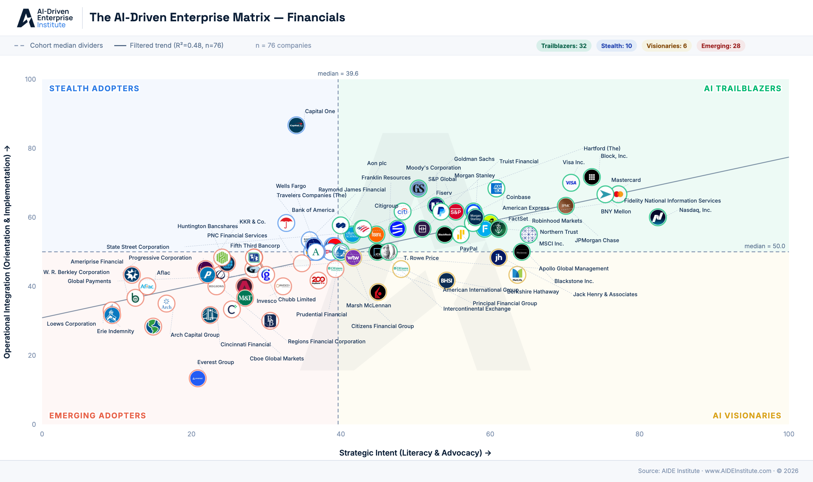
Tracking the AI that counts.
aideinstitute.com
Source: AIDE Institute · 2026 AIDE Index S&P 500 · Financials sector view
Sector 04 / 11Health Care
Health Care · n = 59
Pharma sets the pace.
Johnson & Johnson tops the sector, followed by three medical-device and life-sciences names. 41% are AI Trailblazers — but the long tail of providers and biotechs drags the median.
43
Sector median AIDE Index
Rank · 11 sectors
04
LiteracyKNOW
37
AdvocacySAY
50
OrientationPRIORITIZE
54
ImplementationBUILD
56
Med-device leaders have the cleanest evidence base. Pharma still leans on Advocacy more than Implementation. Within 2 points of the Trailblazer quadrant.
Top 4 · within-sector AIDE Index
01
Johnson & Johnson
Pharmaceuticals
87
02
GE HealthCare
Health Care Equipment
84
03
Medtronic
Health Care Equipment
81
04
IQVIA
Life Sciences Tools & Services
81
Archetype distribution · n = 59
12%
Stealth Adopters
41%
AI Trailblazers
37%
Emerging Adopters
10%
AI Visionaries
Tracking the AI that counts.
Source: AIDE Index S&P 500 · 2026-Q2 · sector-normalized within-sector view (Methodology §4.8)
aideinstitute.com
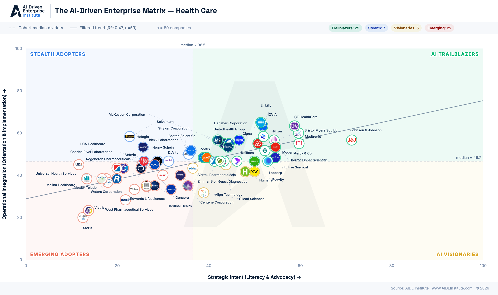
Tracking the AI that counts.
aideinstitute.com
Source: AIDE Institute · 2026 AIDE Index S&P 500 · Health Care sector view
Sector 05 / 11Industrials
Industrials · n = 80
Defense and automation lead.
Axon, Rockwell, Uber, and Johnson Controls top the 80-company sector. 42% Trailblazers, 41% Emerging — the largest sector in the index is also the most bifurcated.
41
Sector median AIDE Index
Rank · 11 sectors
05
LiteracyKNOW
42
AdvocacySAY
42
OrientationPRIORITIZE
50
ImplementationBUILD
61
Axon's 95 within-sector score leads the largest cohort. Defense, electrical, and building-systems names show real AI footprint; legacy machinery does not.
Top 4 · within-sector AIDE Index
01
Axon Enterprise
Aerospace & Defense
95
02
Rockwell Automation
Electrical Components & Equipment
87
03
Uber
Passenger Ground Transportation
85
04
Johnson Controls
Building Products
84
Archetype distribution · n = 80
9%
Stealth Adopters
42%
AI Trailblazers
41%
Emerging Adopters
8%
AI Visionaries
Tracking the AI that counts.
Source: AIDE Index S&P 500 · 2026-Q2 · sector-normalized within-sector view (Methodology §4.8)
aideinstitute.com
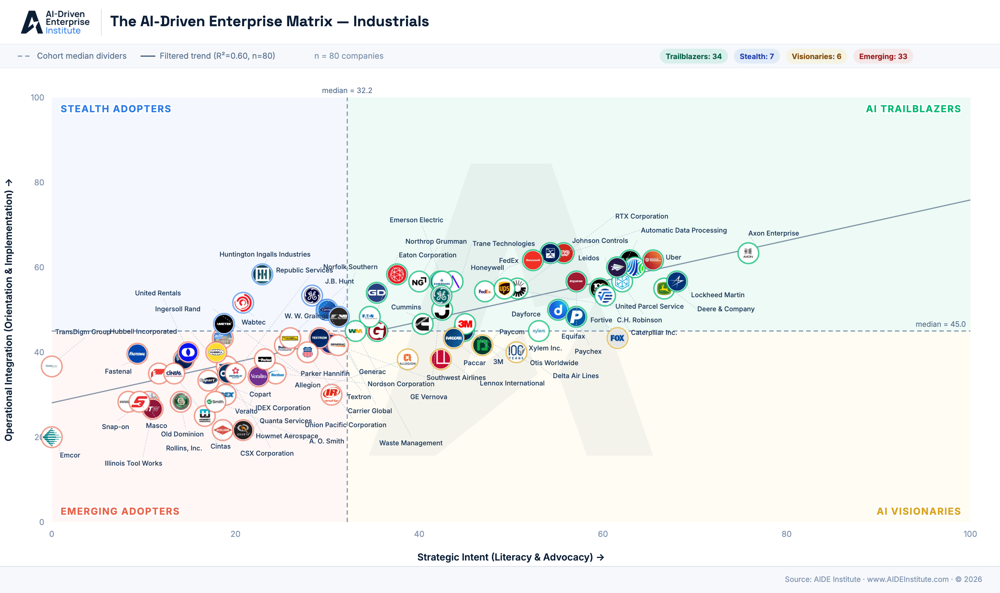
Tracking the AI that counts.
aideinstitute.com
Source: AIDE Institute · 2026 AIDE Index S&P 500 · Industrials sector view
Sector 06 / 11Consumer Discretionary
Consumer Discretionary · n = 48
Pioneers and laggards.
Amazon dominates the sector with a 99 within-sector AIDE score. Marketplaces, food-delivery, and travel platforms anchor the top — the vast majority of the 48 names sit at the median or below.
39
Sector median AIDE Index
Rank · 11 sectors
06
LiteracyKNOW
38
AdvocacySAY
42
OrientationPRIORITIZE
53
ImplementationBUILD
41
Without Amazon, the sector median would drop noticeably. The long tail of retailers and automakers shows limited AI footprint.
Top 4 · within-sector AIDE Index
01
Amazon
Broadline Retail
99
02
eBay Inc.
Broadline Retail
87
03
DoorDash
Specialized Consumer Services
81
04
Expedia Group
Hotels, Resorts & Cruise Lines
80
Archetype distribution · n = 48
8%
Stealth Adopters
44%
AI Trailblazers
42%
Emerging Adopters
6%
AI Visionaries
Tracking the AI that counts.
Source: AIDE Index S&P 500 · 2026-Q2 · sector-normalized within-sector view (Methodology §4.8)
aideinstitute.com
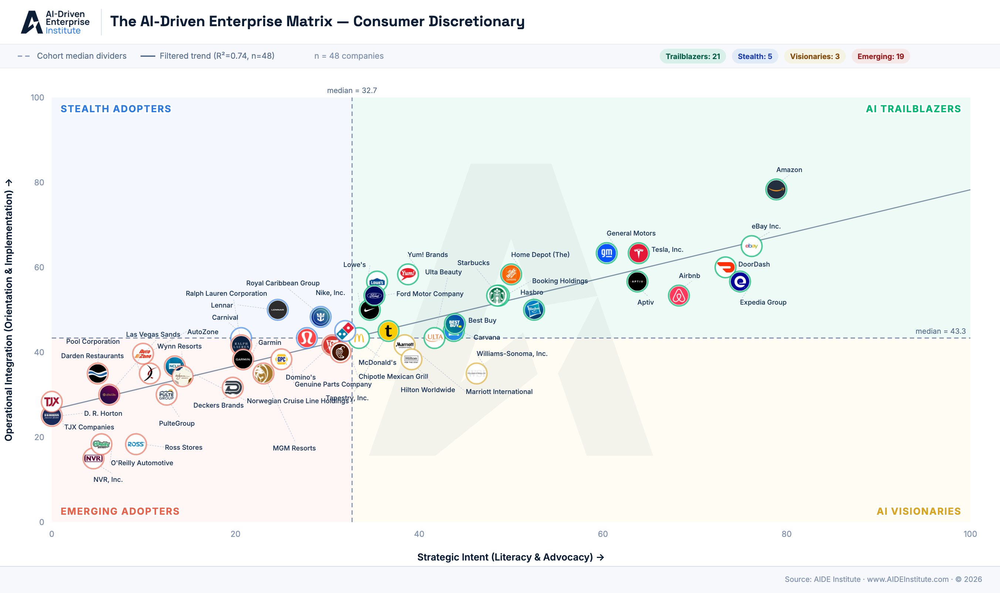
Tracking the AI that counts.
aideinstitute.com
Source: AIDE Institute · 2026 AIDE Index S&P 500 · Consumer Discretionary sector view
Sector 07 / 11Consumer Staples
Consumer Staples · n = 37
Walmart in a league of its own.
Walmart leads the sector by ~20 points within-sector. The mass-retail / personal-care top of the sector lifts the median; 41% of the 37 names remain Emerging Adopters.
36
Sector median AIDE Index
Rank · 11 sectors
07
LiteracyKNOW
32
AdvocacySAY
43
OrientationPRIORITIZE
67
ImplementationBUILD
38
A handful of mass-retailers and CPG leaders pull the median up. Walmart's 98 within-sector score is one of the widest leader-to-pack gaps in the index.
Top 4 · within-sector AIDE Index
01
Walmart
Mass Retail
98
02
Target Corporation
Mass Retail
78
03
Procter & Gamble
Personal Care Products
74
04
PepsiCo
Beverages
73
Archetype distribution · n = 37
8%
Stealth Adopters
43%
AI Trailblazers
41%
Emerging Adopters
8%
AI Visionaries
Tracking the AI that counts.
Source: AIDE Index S&P 500 · 2026-Q2 · sector-normalized within-sector view (Methodology §4.8)
aideinstitute.com
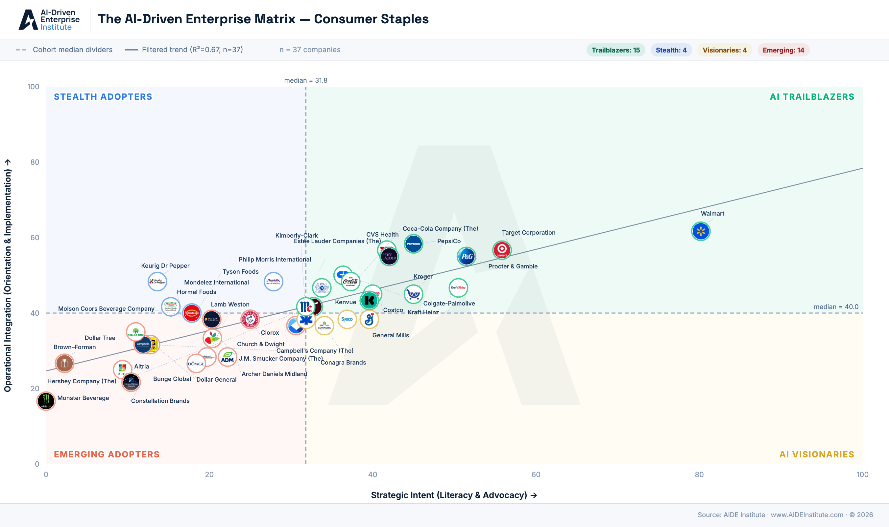
Tracking the AI that counts.
aideinstitute.com
Source: AIDE Institute · 2026 AIDE Index S&P 500 · Consumer Staples sector view
Sector 08 / 11Utilities
Utilities · n = 31
Quiet operators on the grid.
AES, Duke, PG&E and Exelon top the 31-company sector. Stealth Adopter share is the highest in the cohort at 19% — utilities are deploying AI faster than they are talking about it.
29
Sector median AIDE Index
Rank · 11 sectors
08
LiteracyKNOW
26
AdvocacySAY
45
OrientationPRIORITIZE
55
ImplementationBUILD
55
Stealth Adopters at scale. The sector's median Company score (38.1) outpaces its Leadership score (22.7) — operations are ahead of the boardroom.
Top 4 · within-sector AIDE Index
01
AES Corporation
IPPs
95
02
Duke Energy
Electric Utilities
83
03
PG&E Corporation
Multi-Utilities
77
04
Exelon
Electric Utilities
73
Archetype distribution · n = 31
19%
Stealth Adopters
32%
AI Trailblazers
29%
Emerging Adopters
19%
AI Visionaries
Tracking the AI that counts.
Source: AIDE Index S&P 500 · 2026-Q2 · sector-normalized within-sector view (Methodology §4.8)
aideinstitute.com
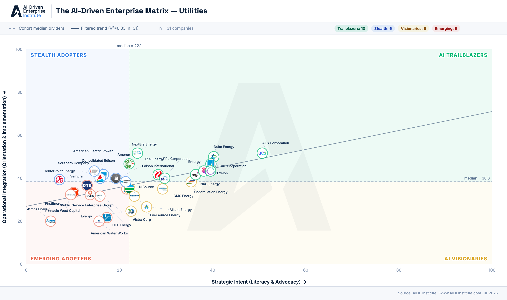
Tracking the AI that counts.
aideinstitute.com
Source: AIDE Institute · 2026 AIDE Index S&P 500 · Utilities sector view
Sector 09 / 11Energy
Energy · n = 22
Services, not the majors.
Oilfield-service names take 3 of the top 4 spots within sector — Schlumberger, Baker Hughes, Halliburton. The integrated majors trail their own service providers. Schlumberger posts the widest within-sector lead in the index.
26
Sector median AIDE Index
Rank · 11 sectors
09
LiteracyKNOW
23
AdvocacySAY
45
OrientationPRIORITIZE
55
ImplementationBUILD
37
Oilfield services dominate the sector. The integrated majors are visible AI talkers but produce less observable build evidence than their own suppliers.
Top 4 · within-sector AIDE Index
01
Schlumberger
Oilfield Services
99
02
Baker Hughes
Oilfield Services
88
03
Halliburton
Oilfield Services
82
04
Chevron Corporation
Integrated Oil & Gas
76
Archetype distribution · n = 22
9%
Stealth Adopters
41%
AI Trailblazers
41%
Emerging Adopters
9%
AI Visionaries
Tracking the AI that counts.
Source: AIDE Index S&P 500 · 2026-Q2 · sector-normalized within-sector view (Methodology §4.8)
aideinstitute.com
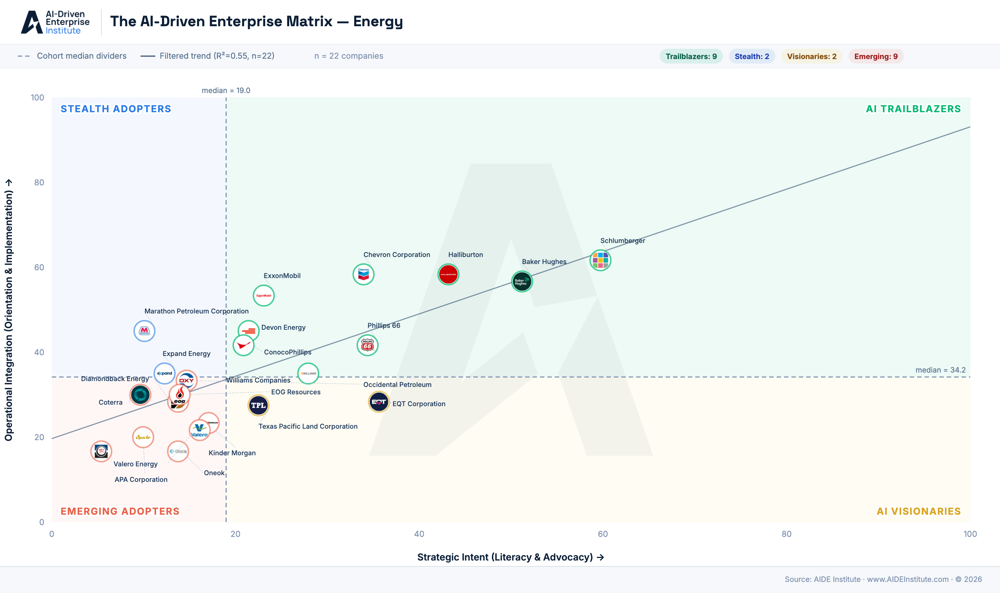
Tracking the AI that counts.
aideinstitute.com
Source: AIDE Institute · 2026 AIDE Index S&P 500 · Energy sector view
Sector 10 / 11Real Estate
Real Estate · n = 31
Data-center REITs at the top.
Equinix and Digital Realty top the sector — the literal landlords of the AI build-out. Real Estate sits near the cohort floor on Leadership, but the data-center sub-sector is a notable counterweight.
25
Sector median AIDE Index
Rank · 11 sectors
10
LiteracyKNOW
27
AdvocacySAY
38
OrientationPRIORITIZE
47
ImplementationBUILD
56
Data-center REITs are an asymmetric play: profiting from the AI build-out without being AI builders themselves. The rest of the sector is deep in Emerging.
Top 4 · within-sector AIDE Index
01
Equinix
Data Center REITs
96
02
Digital Realty
Data Center REITs
93
03
Iron Mountain
Other Specialized REITs
89
04
CBRE Group
Real Estate Services
80
Archetype distribution · n = 31
16%
Stealth Adopters
39%
AI Trailblazers
32%
Emerging Adopters
13%
AI Visionaries
Tracking the AI that counts.
Source: AIDE Index S&P 500 · 2026-Q2 · sector-normalized within-sector view (Methodology §4.8)
aideinstitute.com
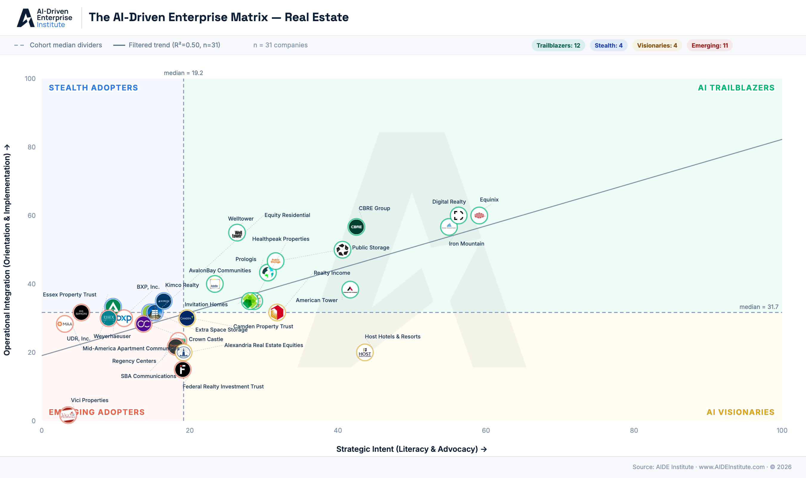
Tracking the AI that counts.
aideinstitute.com
Source: AIDE Institute · 2026 AIDE Index S&P 500 · Real Estate sector view
Sector 11 / 11Materials
Materials · n = 26
Specialty chemicals carry the sector.
Ecolab, Dow, and IFF lead a thin 26-company sector. The sector sits at the bottom of cohort-norm rankings but the Trailblazer share within-sector still reaches 42%.
22
Sector median AIDE Index
Rank · 11 sectors
11
LiteracyKNOW
28
AdvocacySAY
29
OrientationPRIORITIZE
60
ImplementationBUILD
47
Specialty chemicals — Ecolab, Dow, IFF — carry the sector. Commodity metals and mining names show almost no AI footprint in the cohort.
Top 4 · within-sector AIDE Index
01
Ecolab
Specialty Chemicals
93
02
Dow Inc.
Commodity Chemicals
82
03
International Flavors & Fragrances
Specialty Chemicals
77
04
Linde plc
Industrial Gases
75
Archetype distribution · n = 26
8%
Stealth Adopters
42%
AI Trailblazers
42%
Emerging Adopters
8%
AI Visionaries
Tracking the AI that counts.
Source: AIDE Index S&P 500 · 2026-Q2 · sector-normalized within-sector view (Methodology §4.8)
aideinstitute.com
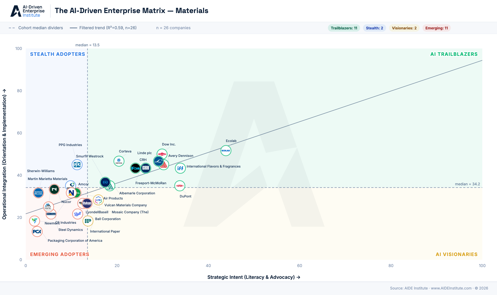
Tracking the AI that counts.
aideinstitute.com
Source: AIDE Institute · 2026 AIDE Index S&P 500 · Materials sector view
Section 06Services & Solutions
Our Services & Solutions
Three ways to put the AIDE Index to work.
One dataset. One methodology. Delivered as continuous market data, as company-level assessments, or as commissioned research at scale.
01
For investors & companies
Market Data.
Continuously refreshed AIDE Index data — score, percentile, sector position, longitudinal trend — for every company in the cohort. Externally verifiable. No proprietary access required.
- AIDE Index score & percentile rank
- Sector, industry & peer benchmarks
- Quarterly trend & matrix tracking
- Data licensing, API, badging rights
3,000+ companies · quarterly cycle
02
For companies & consulting firms
AI Assessments.
Board-level AI maturity assessment built entirely on objective public data. Companies 100–50,000 employees. No surveys, no self-reporting — just verifiable signals across leadership, workforce, strategy, and execution.
- Four-pillar diagnosis & AIDE Index score
- Peer-group competitive analysis
- AI talent density by function & seniority
- Quarterly pulse-check for ROI tracking
Board-ready · days, not weeks
03
For policymakers, EDOs & consulting firms
Commissioned Research.
Bespoke research at scale, built on the AIDE Index platform. Choose a lens — sector, region, or technology — or combine them. Most engagements complete in 4–6 weeks.
- Sector & sub-sector deep dives
- Regional & country competitiveness
- Technology-specific studies (GenAI, LLMs, CV, agents)
- Co-branded publishing & recurring monitoring
40,000+ executives · 30+ countries
Tracking the AI that counts.
Data licensing · assessments · commissioned research · co-branded publishing
aideinstitute.com
Section 07Our Team
Our Leadership Team
Built by operators, researchers, and institution-builders.
Co-Founder & CEO
Paul Cheek
Senior Lecturer at MIT and Senior Advisor for AI & Entrepreneurship. Advises boards and C-suites on AI, alongside his work with the AI-native startups emerging into the marketplace.
Co-Founder
Felipe Ost Scherer
20+ years in innovation management. Co-Founder of InnoScience. Leads the AIDE Institute's research program and global expansion.
Co-Founder & Head of Insights
Kate Reed
15+ years in customer success and community-building. Previously HubSpot and Commsor. Leads partnerships and go-to-market.
Tracking the AI that counts.
Methodology Review Committee & contributors at aideinstitute.com/team
aideinstitute.com
Section 08Get in Touch
Engage with the AIDE Institute
Get in touch.
General Inquiries
hello@aideinstitute.com
Press & Media
press@aideinstitute.com
Website
aideinstitute.com
Tracking the AI that counts.
aideinstitute.com
All partnerships are subject to terms of use and AIDE's strict independence standards and conflict-of-interest policies.